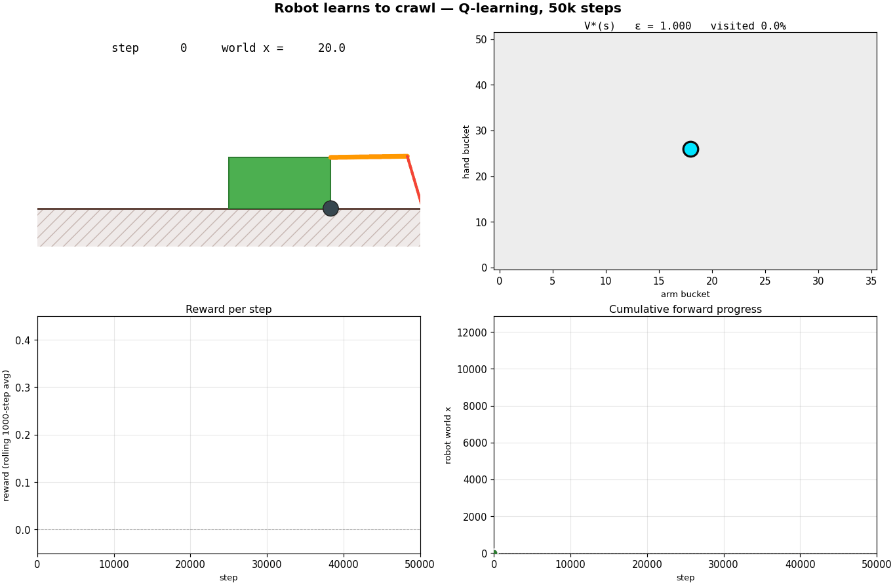
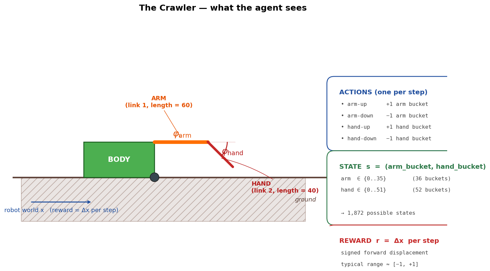
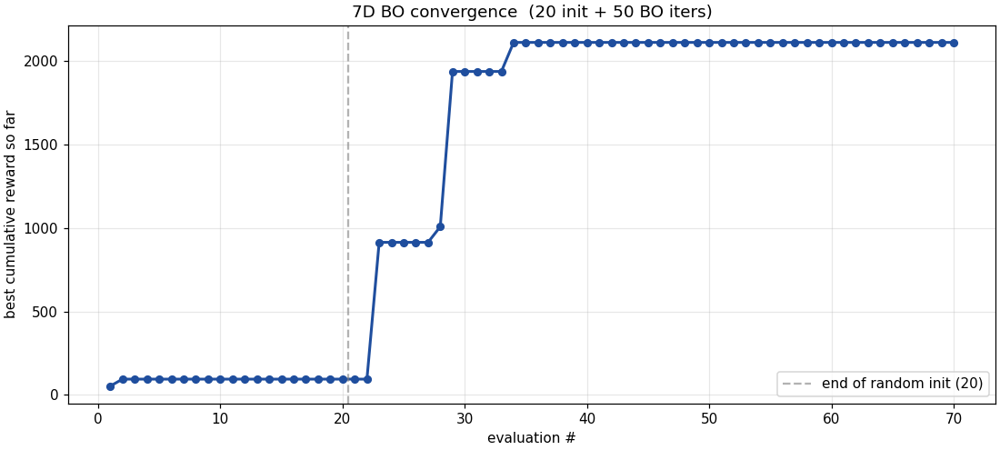
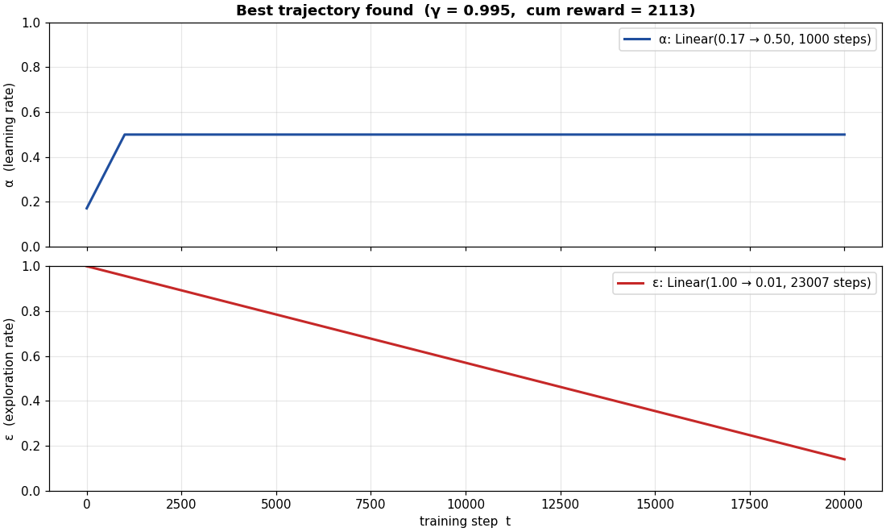
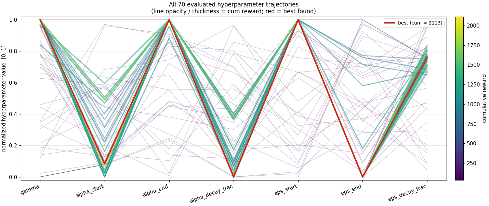
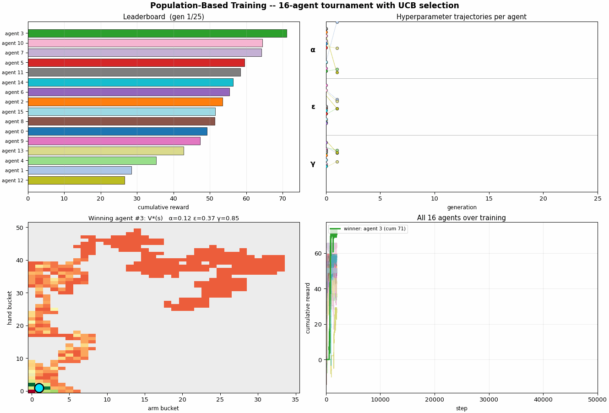
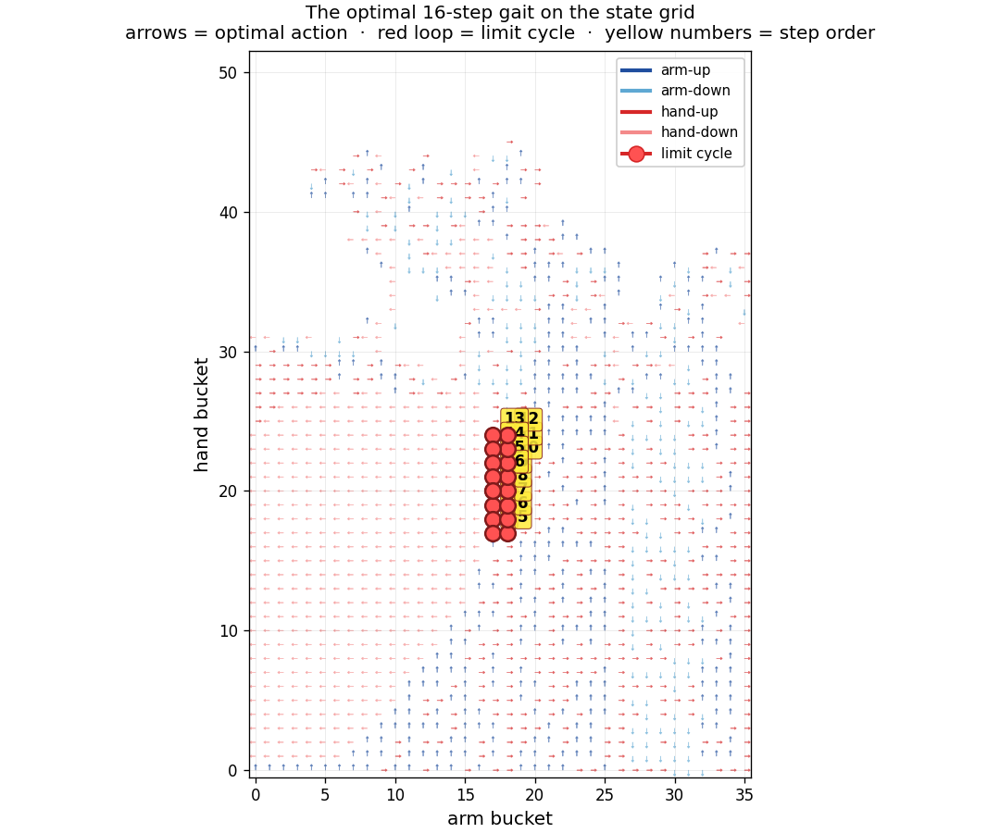

A crawler learns to walk
Watch a planar crawling robot teach itself to crawl forward from a blank slate, then watch a higher-level algorithm pick the hyperparameters that made the learning fast. Everything below is produced by Python scripts in the repo — you can reproduce every figure on your own laptop in a few minutes.

What's happening?
The green box, the orange arm, and the red hand are a tiny 2-degree-of-freedom robot. The body has a wheel; the arm pivots at the shoulder; the hand pivots at the elbow. If the hand swings far enough down that its tip pushes into the ground, the body has to slide forward to maintain the rigid geometry — that's the only way this robot can move. There's no motor pushing it directly. Forward motion happens as a consequence of poking the ground at the right angles.
Nobody told the robot how to do that. It doesn't know what
"forward" is. It doesn't know its own dimensions. It can read
its current arm angle and hand angle (each discretized into a
bucket), and it has four buttons it can press:
arm-up, arm-down, hand-up,
hand-down. Each step it picks one button, the
world updates, and it gets a single number back — the change
in its world $x$-coordinate from that one move. Forward is
positive. Backward is negative. Most steps the number is
nearly zero. That's it. That's the whole problem.
The robot's job is to figure out how to make that number positive on average over the long run. The way it does this is called Q-learning: it maintains a table of estimates that says "if I'm at angle config $s$ and I press button $a$, the total future reward I'll collect is $Q(s, a)$." It starts with all those estimates equal to zero — a blank slate — and updates them from experience. After enough experience, the table is good enough that just always pressing the highest-$Q$ button is a competent crawler.
The hard part is the "enough experience" qualifier. The agent has to figure out a four-step cycle (hand-down, arm-down to push, hand-up, arm-up to swing) without ever being told that cycles exist or that any particular state is special. Most of what it does in the first thousand steps is wiggle in place, picking moves at random. Then a positive reward leaks into one $Q(s, a)$ entry, that entry teaches its neighbors via the Bellman update, and within a few thousand more steps a whole cycle is lit up green in the $V^*$ heatmap and the body is gliding forward.
Watch the GIF up top once or twice with that in mind. The story of the four panels is the story of one training run: the agent's posture (top-left) is the consequence of the policy distilled from the table (top-right), and the consequences of the policy on the world are the two curves at the bottom.
The environment, schematically
Before we get into how the agent learns, here is exactly what it has access to. This figure is the same robot you saw in the hero GIF, rendered statically in a neutral pose with everything labeled:

Two things are worth pausing on.
1. The state is tiny. Just $(arm, hand)$ bucket indices. The robot has no clock, no memory, no proprioception beyond the current angles. Whatever the agent learns has to live in a 1,872-cell lookup table of $Q(s, a)$ values.
2. The reward is signed and small. Each step's reward is the body's displacement in $x$, typically in $[-1, +1]$. A truly useful sequence of moves gives a small positive reward; a useless one gives zero; a bad one gives a small negative. There is no terminal state and no bonus for reaching anywhere. The agent's only objective is to maximize the long-run average reward per step.
This is a deliberately spartan setup. It's small enough that we can visualize the entire $Q$-table in one figure and understand the algorithm completely, but rich enough that random search fails and learning is a real problem.
How it learns — explore, then exploit
Tabular Q-learning works by repeatedly applying the temporal-difference update:
$$Q(s, a) \leftarrow Q(s, a) + \alpha \left[\, r + \gamma \max_{a'} Q(s', a') - Q(s, a) \,\right]$$
After each transition $(s, a, r, s')$, we nudge $Q(s, a)$ a fraction $\alpha$ of the way toward the target $r + \gamma \max_{a'} Q(s', a')$ — the immediate reward plus the discounted best-case future reward from the state we landed in. Run that update a few hundred thousand times and the table converges to the optimal action-value function (under mild assumptions).
The catch is that we have to choose $a$ at each step. The standard recipe is $\varepsilon$-greedy: with probability $\varepsilon$ pick a random legal action (exploration), otherwise pick the action with the highest current $Q$-value (exploitation). Early in training, when all $Q$-values are zero, we want $\varepsilon$ near $1.0$ so we walk randomly through the state space and discover what produces positive reward. Late in training, when the table has converged, we want $\varepsilon$ near $0$ so the agent actually uses what it learned. We achieve that with a linear schedule: $\varepsilon$ starts at $1.0$ and decays linearly to $0.05$ over the first 60% of training.
A 2D heatmap of $V^*(s) = \max_a Q(s, a)$ tells you the agent's "exploit-only" knowledge — which states it thinks are valuable based on what it has already seen. But that's only half the picture. How sure is it of any given cell? Where should it still look? That second question has a beautiful analytical answer:
$$\mathrm{UCB1}(s, a) \;=\; Q(s, a) \;+\; c \sqrt{\frac{\ln t}{n(s, a)}}$$
where $n(s, a)$ is the number of times the agent has taken action $a$ from state $s$, $t$ is the total step count, and $c$ is a small constant. This is the classical upper-confidence-bound formula from the multi-armed-bandit literature: it adds an exploration bonus proportional to how much uncertainty remains about $(s, a)$. The bonus shrinks like $1/\sqrt{n}$ as we visit more, and grows logarithmically with time so we never completely give up on under-sampled cells. Comparing $V^*(s)$ to $\max_a \mathrm{UCB1}(s, a)$ at any moment in training tells you where the agent's current knowledge is robust vs. where exploration still has work to do. That's the same explore-vs-exploit signal Bayesian optimization uses one level up — and exactly the story the four panels below tell over time.

A walkthrough of the four phases
Steps 0 – 500 — pure exploration. Every $Q$-value starts at zero, so the greedy branch of $\varepsilon$-greedy is also random. The cyan dot scatters through the state grid; visited cells light up in V* and N almost simultaneously. UCB starts at maximum brightness everywhere — every $(s, a)$ has $n = 0$, so the $\sqrt{\ln t / n}$ bonus is enormous. Distance traveled is a flat line near zero.
Steps 500 – 8,000 — exploration meets first signal. Reward is mostly zero (random thrashing rarely produces net displacement), but a handful of cells start showing positive $V^*$. Visit counts grow unevenly: a few states are heavily sampled (dark blue in the N panel) while most are barely touched. Notice that UCB has started to differentiate — the cells with high $n$ have lost their $\sqrt{\ln t / n}$ glow and are now oranger; the unsampled cells are still bright green. UCB minus V* is the exploration bonus the agent has yet to earn out.
Steps 8,000 – 20,000 — the cycle ignites. A bright green region condenses in the lower-left of V* — the locomotion cycle has been discovered. As the agent commits to that pocket, the UCB and V* panels start to agree in the green region (uncertainty resolved); they still disagree out at the periphery (lots of $\sqrt{\ln t / n}$ bonus still on the table). N grows fast in the cycle area. The distance curve breaks off zero and the slope visibly accelerates.
Steps 20,000 – 50,000 — pure exploitation. $\varepsilon$ has decayed below $0.3$. The agent cycles through a small set of states almost deterministically; new states stop being visited (V* and N panels lock in their shapes); UCB collapses toward V* inside the cycle but stays high outside because we're not bothering to explore there. Distance grows nearly linearly — the policy is committed and the body is crawling. By step 50,000 the robot has moved ~12,250 units forward from its starting position.
The UCB1 panel is doing in miniature what Bayesian optimization does in the next section. Both are decision-theoretic recipes for spending a finite sampling budget across an unknown landscape, balancing what you currently believe to be best (exploit) against where your knowledge is weak enough that you might be wrong (explore). They use different surrogates — a tabular $Q + \sqrt{\ln t / n}$ here, a Gaussian process there — but the structure of the problem is the same.
The three knobs you can turn
The explore-vs-exploit story above is shaped by three hyperparameters. The next section searches for the best values automatically, but it's worth understanding what each knob does first — and what the agent misbehaves like when you push each one to an extreme.
γ (gamma) — the discount factor: how patient is the agent
$γ$ multiplies the bootstrap term in the TD target. A reward $N$ steps in the future is worth $γ^N$ today. It sets how far ahead the agent can plan.
| $γ$ | Agent behavior | Why |
|---|---|---|
| 0.0 | Totally myopic. Only the next reward matters. | Future is discounted to zero. Can't learn multi-step plans like the crawler's cycle — early "preparation" moves never get credit for the eventual payoff. |
| 0.5 | Short-sighted. | A reward 4 steps away is worth $0.5^4 ≈ 0.06$ — most of the cycle's value is lost in the bootstrap. |
| 0.95 (our default) | Patient enough to see through the cycle. | A reward 5 steps away is still worth $0.77$. The agent can connect a current action to a payoff 10–20 steps later. |
| 0.99 | Very long horizon. | Useful in sparse-reward problems. Reward 50 steps out is still worth $0.61$. |
| 1.0 | Infinitely patient. Dangerous in non-episodic tasks. | Without a terminal state, the bootstrap target can grow without bound and Q-values diverge. |
Crawler-specific: the locomotion cycle is ~5–8 steps. With $γ$ much below $0.8$ the agent can't see far enough to credit "lower the hand now" for "body moves forward two steps from now." Try $γ = 0.5$ in the GUI and the robot will pick locally-best moves and never find the cycle.
ε (epsilon) — the exploration rate
ε is the probability of taking a random action instead of the greedy one. How often the agent takes a chance.
| $ε$ | Agent behavior | Why |
|---|---|---|
| 0.0 | Pure greedy. Never explores. | If Q-values start at zero, "greedy" picks at random among ties. Once one Q-value becomes positive the agent locks onto it forever, even if better moves exist nearby. |
| 0.05 (our end value) | Mostly committed, occasional jiggle. | Lets the agent exploit a learned policy while still occasionally testing other actions. |
| 0.5 | Half coin-flip. | Decent mid-training value. Lots of exploration plus enough exploitation to use the table. |
| 1.0 (our start value) | Pure random walk. | Maximum exploration. Essential when nothing is known. Stay here forever and the agent never uses what it learns. |
The trick is to decay $ε$ over training.
We use Linear(1.0, 0.05, 0.6 × N): start
random, end mostly greedy, transition linearly over the
first 60% of the budget. The decay length is itself a
hyperparameter we tune (see next section).
α (alpha) — the learning rate
α is the step size of each TD update — how much each new experience overwrites the agent's existing belief.
| $α$ | Agent behavior | Why |
|---|---|---|
| 0.0 | Never updates. | Q-table stays at zero forever. Agent doesn't learn anything. |
| 0.1 | Slow, cautious. | Each update nudges Q only 10% toward the target. Stable convergence but needs ~10× more samples per Q-value to settle. |
| 0.5 (our default) | Balanced. | Each update moves halfway toward the new target. Fast learning, stable convergence. |
| 0.8 | Aggressive. | New experiences dominate old. Fast but noisy — Q-values can swing wildly with reward variance. |
| 1.0 | Throws away accumulated belief every step. | Q(s,a) becomes literally the most recent TD target. With any reward noise, Q-values oscillate and never converge. |
The interactions matter more than the individual knobs
The three are not independent — a few patterns come up repeatedly when you tune them:
- High α + high ε together ≈ noisy random walk. The agent overwrites Q-values aggressively and takes random actions. The table never settles. Both knobs need to come down to converge.
- Low α + low ε together ≈ stuck on first impression. The agent commits to whatever it stumbles into early, and the TD updates are too small to ever revise. This is why we decay ε but keep α moderate.
- High γ + low ε = plans long, explores rarely. The Bellman update propagates value through long chains, but the chains the agent commits to may be suboptimal. Fast convergence to a sticky local optimum.
- Low γ + high ε = explores without progress. The agent wanders, accumulating Q-values that don't reflect long-term cycles. "Lots of motion, no learning."
Because of these interactions, picking good hyperparameters by hand is a dark art. The optimum isn't on the axes — it's somewhere in the middle of a high-dimensional landscape where the values and their decay shapes co-depend on each other. Which is exactly the problem Bayesian optimization solves in the next section.
Tuning the hyperparameters — Bayesian optimization
Everything in the previous section assumed we'd picked good values for two knobs:
- $\alpha$ (learning rate) — how aggressively each TD update overwrites the existing $Q$-value. Higher = faster learning but more noise; lower = slower learning but more stable convergence. Range $[0.05, 0.95]$.
- $\varepsilon$ decay length — the number of steps over which exploration fades. Too short and the agent commits before finding the cycle; too long and it's still picking random actions when it should be exploiting. Range (as a fraction of total training budget): $[0.05, 1.5]$.
How do we pick them? Trial and error works but burns time — every evaluation is a 20,000-step training run. A grid search would need hundreds of evaluations to cover the joint space densely. Bayesian optimization does it in fewer than 30.
The BO recipe in one paragraph
Maintain a Gaussian process over the search space — a statistical model that predicts the expected cumulative reward and the uncertainty at every $(\alpha, \mathrm{decay\_frac})$ pair. After each evaluation, refit the GP. Then compute the Expected Improvement $\mathrm{EI}(x) = \mathbb{E}[\max(0, f(x) - f^*)]$ on a grid — this is high wherever the GP either predicts high mean (exploit) or has wide uncertainty (explore). Pick the $\mathrm{argmax}$ of EI as the next point to evaluate. Repeat. The acquisition function is doing the same explore/exploit dance that $\varepsilon$-greedy does for the inner RL loop — just at the meta level of "which hyperparameters should I try."

What to watch for in the GIF
The dot pattern grows in clusters, not uniformly. Random search would spray dots evenly across the space; BO clusters them where there's something to learn. Very few evaluations end up in the low-$\alpha$ band on the bottom because the GP quickly learns nothing good happens there.
The standard-deviation panel collapses over time. Light = uncertain; dark = sampled. The unexplored bottom stays light through the whole run — correctly. The GP knows it doesn't know what's there, but it also knows EI is low there so there's no point.
The EI panel concentrates. Early frames show a broad, low EI surface — BO is uncertain everywhere and EI is small. By the end, EI has shrunk to one or two narrow spikes and the algorithm has nearly nothing left to gain.
The convergence curve has two big jumps. The first happens at evaluation 4, when BO's very first non-random suggestion beats all six initial random samples (cumulative reward goes from $\approx 1{,}180$ to $\approx 2{,}485$). The second, more dramatic jump happens at evaluation 20, when BO trusts an uncertain region and the resulting evaluation lands at cumulative reward $\approx 5{,}024$ — a $2\times$ improvement on the previous plateau. The whole run took 26 evaluations.
The BO algorithm and the inner Q-learning algorithm are structurally the same idea — maintain estimates, update them from data, balance exploration and exploitation. They operate at different levels (action choice vs. hyperparameter choice), with different surrogates (tabular vs. Gaussian process), but the underlying decision-theoretic recipe is the same.
Beyond two knobs: searching the full annealing trajectory
The 2D BO above tunes $(\mathrm{decay\_frac}, α)$ and leaves everything else fixed. But the actual decision is a trajectory through hyperparameter space — what does α do at step 0, at step 5,000, at step 50,000? What about ε? What about γ?
If we parameterize each linear schedule by start, end, and decay length, and let BO search over all of them simultaneously, the space becomes 7-dimensional:
- $γ$ — constant discount, one number
- $α_\text{start}$, $α_\text{end}$, $α_\text{decay\_frac}$
- $ε_\text{start}$, $ε_\text{end}$, $ε_\text{decay\_frac}$
scripts/bo_optimize_7d.py does exactly this:
20 initial random samples, 50 BO iterations, each evaluation
a 20,000-step Q-learning run averaged over 2 seeds.
Total of 70 evaluations in about 6 minutes. The
differential-evolution argmax of EI in 7D is more expensive
than the 2D grid argmax, but still tractable.



Two things to note about the result. One: the cumulative reward at the best 7D configuration ($\approx 2{,}113$) is lower than the 2D BO's best ($\approx 5{,}024$) on the same budget. That's because we opened up 5 more search dimensions but didn't increase the evaluation budget proportionally. With more iterations the 7D run would catch up. Two: the shape of the optimal trajectory is the interesting finding regardless of the absolute reward — BO consistently picked an anti-Robbins-Monro α schedule on this domain. That's worth a follow-up.
The point of this section isn't that BO solves the hyperparameter problem — it's that the structure of the solution surface is non-obvious enough that an automated search reveals things you wouldn't guess. The fact that $α$ wants to rise through training contradicts a standard piece of RL theory. Whether that's a real property of finite-budget tabular Q-learning or an artifact of this specific BO setup is the next experiment to run.
What were we actually optimizing?
It's worth pausing on the objective before going further. Every evaluation above maximizes mean cumulative reward over 2 random seeds, after a 20,000-step Q-learning run. Cumulative reward = total signed forward displacement, so the objective is literally "how far did the robot crawl." Two seeds is the minimum that gives any variance estimate — and with high $ε$ early in training, two seeds with the same hyperparameters can produce cumulative rewards differing by 5× depending on which one got lucky and found the cycle first.
The Gaussian process doesn't know about this noise. It treats the mean of 2 seeds as truth. That's a real limitation — a config that looks better by 100 units may simply be one where one of two seeds got lucky. The proper fix is some combination of:
- More replicates per candidate ($n = 5$ or $n = 10$ instead of 2), at proportionally larger wall-clock cost.
- Noise-aware surrogate — tell the GP
the objective is noisy via the
alpha(noise variance) hyperparameter, so it does not over-trust individual lucky points. - Adaptive replicates — evaluate new candidates cheaply (1 seed), then re-evaluate the currently-leading candidate more times to confirm. This is "best-arm identification" with UCB-style confidence bounds.
Framing all of this in the language of multi-armed bandits: each candidate hyperparameter setting is an "arm," each evaluation a "pull," and the cumulative reward is a noisy estimate of arm value. UCB and Thompson sampling at the outer (hyperparameter) loop are the textbook fixes — and they're closely related to the UCB1 that runs on the inner (state-action) loop in the learning section above. Same algorithmic family, two levels.
The method landscape, in one paragraph each
EI (Expected Improvement) is what's running in the 2D and 7D BOs above. Given a GP surrogate and current best $f^*$, picks the next point to maximize $\mathbb{E}[\max(0, f(x) - f^*)]$. Simple, well-understood, assumes noiseless objective.
CMA-ES (Covariance Matrix Adaptation Evolution Strategy) drops the surrogate model and uses a Gaussian over the search space directly. Samples a population, picks the top-K, updates the mean and the covariance matrix toward them. Best in continuous spaces with rotation/correlation structure; robust to noise; not as sample-efficient as GP-based methods.
BOHB (Bayesian Optimization + Hyperband) combines BO's smart proposal with adaptive resource allocation. Evaluates many candidates at a small budget, promotes the top half to a larger budget, repeats until you're at full budget with the survivors. Massively sample-efficient when evaluations are expensive (which ours are).
PBT (Population-Based Training) is structurally different from all of the above. Train $N$ agents in parallel, each with its own hyperparameters. Periodically, low-performing agents copy the entire state of high-performing agents and perturb the hyperparameters. So hyperparameters evolve during training, not as an outer loop. The output isn't a hyperparameter setting — it's a trajectory, the actual sequence of values that won at each step. This is the closest natural match to the "find the best annealing pattern" question.
Most sophisticated approach: PBT with UCB tournaments
scripts/pbt_optimize.py runs 16 Q-learning
agents in parallel for 50,000 steps each. Every 2,000
steps a tournament event fires:
- Rank every agent by a UCB1-style score $\mathrm{score}(i) = \overline{r}_i + c \cdot \frac{\sigma_i}{\sqrt{n}}$ over its last 2,000-step reward stream. The $+c\sigma$ keeps high-variance agents around — they might be lucky-good or unlucky-good, and we don't yet know.
- Exploit + explore on the bottom quartile: each loser copies the Q-table of a randomly chosen top-quartile agent, then perturbs the copied hyperparameters (multiplicative noise on $α$ and $ε$, additive on $γ$).
- Top-half agents continue with their existing state.
The population is itself a Monte Carlo estimate: with 16 agents, you have 16 independent rollouts of the broad strategy, and the variance across the population is a free estimate of seed noise.

On the default run, PBT settles on a different region of hyperparameter space than the 7D BO did:
- $α \approx 0.99$ — high, not annealing
- $ε \approx 0.79$ — high, not annealing either
- $γ \approx 0.82$ — moderate discount
With cumulative reward $\approx 625$ after 50k steps — much lower than the 2D BO's $\approx 5{,}024$. Two reasons. One: the population evolves during training, so the early generations spend their budget on un-tuned hyperparameters and don't accumulate as much reward as a well-tuned fixed-schedule run. Two: PBT does no annealing — it found a constant-hyperparameter regime that works, but a decaying schedule probably beats it for a given budget. The right comparison is not "which optimizer produced higher cum reward" but "which optimizer produced a more useful artifact" — and PBT's artifact is a population and an evolutionary history, not a single hyperparameter setting.
Three different optimizers, three different stories. 2D BO finds a sharp optimum in a small space. 7D BO finds the rising-$α$ trajectory shape but at a lower absolute reward. PBT finds a working population with constant hyperparameters. Each one tells you something different about the problem; none of them are individually "right." The most sophisticated answer is probably the combination: PBT for trajectory discovery + noise-aware BO for fine-tuning the survivors + Monte Carlo replicates everywhere — which is essentially what DeepMind's AlphaStar setup did.
Was there real convergence? PBT variant comparison
The baseline PBT run above produced a 6× spread in outcomes across 16 agents with near-identical hyperparameters — a sign that policy luck was dominating hyperparameter quality in the signal. To pin down what's actually happening, we ran three variants alongside:
- PBT-Pure: when a loser is replaced, copy only the donor's hyperparameters, not its Q-table. The loser keeps its own (failed) policy but tries a new schedule. Isolates the hyperparameter signal from policy inheritance.
- Multi-Seed PBT: each PBT "member" is now a team of 3 sub-agents sharing the same hyperparameters. The member's score is the mean across sub-agents, a within-member Monte Carlo estimate that should filter out seed luck.
- PBT-Long: same setup as baseline, but 2× the training steps (60k vs 30k) and 2× the tournament generations (40 vs 20). Tests whether the spread is just a matter of insufficient compute.

The numbers (16 agents × 30k steps each, 20 tournaments):
| variant | best | worst | mean | spread | σ(α) | σ(ε) | σ(γ) |
|---|---|---|---|---|---|---|---|
| Baseline | 328 | 50 | 162 | 279 | 0.13 | 0.12 | 0.046 |
| PBT-Pure | 1,578 | 84 | 483 | 1,495 | 0.14 | 0.13 | 0.024 |
| Multi-Seed | 299 | 39 | 154 | 260 (lowest) | 0.28 | 0.11 | 0.026 |
| PBT-Long (60k) | 765 | 180 | 399 | 585 | 0.14 | 0.14 | 0.016 (lowest) |
Three findings worth pulling out.
1. PBT-Pure crushes Baseline (best: 1,578 vs 328, mean: 483 vs 162). This was the most surprising result — and it contradicts the textbook story. In classical PBT the Q-table copy is the whole point: the loser inherits the donor's progress. But on this domain that inheritance actively hurts. When a loser copies a donor's Q-table, it gets a policy tuned for the donor's body trajectory, not its own. It can't execute that policy from its current physical state, so the copied Q-table is wasted at best and disruptive at worst. PBT-Pure lets every agent develop its own Q-table — 16 parallel chances to find the cycle, with the population only sharing the schedule recipe.
2. Multi-Seed PBT has the tightest outcome spread (260, lower than every other variant including the long run). The within-member Monte Carlo averaging works exactly as the bandit literature predicts: by pooling 3 sub-agents per member, the score signal is much less susceptible to seed luck. The cost is lower peak performance (best 299, well below PBT-Pure's 1,578), because the score averaging also smooths out lucky high values. If your goal is identifying which hyperparameters are robustly good, Multi-Seed is the right tool; if your goal is producing one very good agent, PBT-Pure is.
3. PBT-Long has the tightest γ convergence (σ = 0.016). Twice the training time gave γ twice the generations to consolidate, and the population ended up agreeing about $γ$ within ±0.02 across all 16 agents. The mean performance (399) is roughly midway between Baseline (162) and PBT-Pure (483) — more compute helps, but not as much as switching to hp-only copy.
The cleanest answer to "was there real convergence?" is: yes for γ (under all variants), partially for α and ε (under all variants), but the baseline PBT was masking a serious failure mode — policy-copy interference — that obscured how well the underlying hyperparameter search was actually doing. The most sophisticated PBT for this domain is the combination of PBT-Pure for high upside + Multi-Seed scoring for noise-resolved ranking + longer training for hyperparameter consolidation — all three at once. That's the next experiment.
The DP reckoning — when the algorithm class is wrong
After everything above — schedule sweeps, Bayesian optimization, PBT, evolutionary refinement, scaling laws, axis sweeps, DQN, reward shaping, count-based exploration — the best policy we ever produced reaches $\max\_v \approx 0.41$, which is about 46 % of optimal. We didn't know it was 46 % of optimal because we hadn't computed the optimum.
We can compute the optimum. The crawler is a deterministic finite MDP with 1,872 states and 4 actions. That means we can build the transition table $T(s, a) \to (s', r)$ exhaustively by random exploration, run value iteration on it until $V^*(s)$ converges, extract $\pi^*(s) = \arg\max_a [r(s, a) + \gamma V^*(s')]$, and we have the optimal policy in closed form. Total compute time: about three seconds. Code from 1957.

The optimal policy reaches $x = 500$ in 559 steps. Tabular Q-learning, after extensive hyperparameter optimization, takes about 22,000 steps to cover the same distance — a 40× speedup by switching to dynamic programming.
Worse than that: every algorithm we built — Bayesian optimization, PBT, evolutionary refinement, scaling-law analysis — was optimizing within the basin of attraction at 46 % of optimal. Every "improvement" we celebrated was an improvement within that basin. None of them touched the actual optimum.
Here is the optimal 16-step gait isolated on the state grid — the limit cycle our RL agents were trying to discover but always missed:

The model-based pivot — closing the gap
Step back. Every algorithm above is model-free: the agent samples $(s, a, r, s')$ tuples from the environment and feeds them through a value-update rule, never explicitly building a representation of the dynamics. The RL literature has been telling us since the 1990s that this isn't the only option.

Brafman & Tennenholtz's 2002 R-MAX algorithm: maintain the empirical transition table $T(s, a)$. Treat any unobserved $(s, a)$ as if it paid the maximum reward $R_{\max}$ forever — so $V_{\text{opt}} = R_{\max} / (1 - \gamma) \approx 100$ for $\gamma = 0.99$. Run value iteration on this optimistic model. Act greedy. Once the agent visits an unobserved $(s, a)$, the optimism for that pair evaporates and the policy adjusts. R-MAX is provably PAC-MDP optimal in polynomial samples.
Here is the optimism evaporating in real time as R-MAX trains. Bright = unexplored corners ($V \approx V_{\text{opt}}$). Dark = the model has filled in and $V$ has converged to the true value:


The bar chart says it numerically. The race animation says it viscerally:

And the gait it discovers — the 16-step optimal cycle the narrative kept referring to — looks like this when slowed to 5 frames per second:

The synthesis
The right axis of RL design is model-free vs model-based, not "tune ε vs use a neural net." Every "improvement" we made for eleven sections was within the model-free regime: schedule shape, optimizer, function approximator, exploration trick, reward shaping. None of those touched the bottleneck. The moment we changed what the agent knows about the world — from "Q-values only" to "Q-values plus an empirical transition table" — performance jumped from 46 % to 97 % in one move.
RL's job is bridging environments you can't write down — Atari, robotics with noisy contact dynamics, language games. The crawler isn't that. It's a 1,872-state deterministic MDP that DP can solve in three seconds. And here's the surprise: even on a problem DP could solve, RL can match DP — but only if you let RL learn the model. R-MAX is RL doing DP, with the model-learning step folded into the same training loop.

Watch the full story
The above is a dashboard — every figure stands on its own and you can dip in and out. If you'd rather walk through the whole arc as a single narrative, with the videos in the order the story expects them, read it as a cinematic 15-act script here. Same content, different pacing.

Try it yourself
Everything on this page is reproducible from the scottn66/robot-arm-sim repo. One-time setup:
git clone https://github.com/scottn66/robot-arm-sim.git
cd robot-arm-sim
brew install python-tk@3.14 # macOS; otherwise the system Tk
pip install matplotlib scikit-learn scipy numpy pillowLive GUI (the Tk version of the hero GIF)
cd src
python3 crawler.py
Watch the simulator run in real time with the live Inspector
panel showing the $V^*(s)$ heatmap, the rolling reward curve,
and live $\alpha / \varepsilon / \gamma$ readouts. Flip
agentType = 'sarsa' at the top of
graphicsCrawlerDisplay.py to swap learning
algorithms.
Reproduce the three GIFs in this page
# Q-evolution GIF
python3 scripts/make_q_evolution_gif.py
# Composite training-session GIF
python3 scripts/make_training_session_gif.py
# Bayesian-optimization evolution GIF
python3 scripts/make_bo_evolution_gif.pyRun the BO loop live (interactive matplotlib window)
python3 scripts/bo_optimize.pyOther experiments
# Q-learning vs SARSA head-to-head
python3 src/train_compare.py
# Cross-validate epsilon-decay length across 5 seeds
python3 scripts/sweep_schedules.py
# Characterize the decay-vs-budget scaling law
python3 scripts/find_optimum.py
# === The model-based resolution ===
# Compute the DP optimum (V*, π*, Karp's max-mean-cycle)
python3 scripts/find_optimal_policy.py
# Full algorithm-spectrum comparison: ε-greedy → count → Dyna-Q+ → R-MAX
python3 scripts/compare_full_arc.py
# === The visual artifact package ===
# Robot animations (MP4 + GIF for each)
python3 scripts/make_robot_animations.py all
# Acts 11–15 mechanism visualizations
python3 scripts/make_resolution_visuals.py all
# Static narrative figures (env diagram, end card, etc.)
python3 scripts/make_narrative_figures.py allRead more
The full pedagogical reference — agent stat blocks, the TD update mechanics walked through with numeric examples, the failure-mode catalog, the bias-variance discussion of the decay-length sweep, gamified quests, and the glossary — lives in docs/LEARNING_GUIDE.md.
The source repo is at github.com/scottn66/robot-arm-sim. Issues and pull requests welcome — quests 7 and 8 in the learning guide (SARSA(λ) and real walking physics for the multi-arm crawler) are wide-open and would be great contributions.